Double Commander may work with compressed files just like it would be simple folders.
For example if we have a ZIP file into a panel, we may simply select it, press Enter and panel will show the content of the ZIP just like if we would change to a directory.
Double Commander is versatile enough to use external programs to deal with compressed files through it own interface. It uses two different principles to deal with the compressed files:
When we try to open an archive, Double Commander first checks the list of available packer plugins.
Once "inside" the compressed file, we may do some minimal basic functions like viewing the file, copy it to the other panel and some limited function like that.
The next following image shows us an example where we selected the compressed file "help.rar" and we simply press Enter in it just like it would be a directory:
After calling the view (F3) or edit (F4) command, Double Commander will extract the file under the cursor to the system directory for the temporary files and open it. After closing the viewer, the temporary file will be deleted. If the file opened in the editor is changed, Double Commander will offer to pack it back (if the compressed file format and the packer plugin or external archiver support this feature).
When using a double-click or pressing Enter, Double Commander will show the properties window of the packed file:
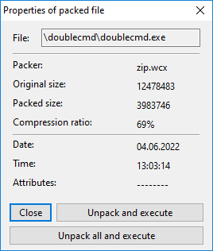
The Packer line displays the name of the packer plugin used or the name of the external archiver.
Buttons:
Close – will close the properties window.
Unpack and execute – Double Commander will extract the file under the cursor to the system directory for the temporary files and call the default action from internal or system file associations.
Unpack all and execute – like the previous one, but the entire contents of the archive will be extracted first.
Double Commander allows to configure the automatic opening of file in the associated program directly, use <AutoExtractOpenMask>.
When closing, Double Commander deletes all temporary files.
We may configure Double Commander to use an external "packer plugin" files that will help to deal with a compressed archive.
Right from the installation, Double Commander already incorporates some of these .WCX plugin files.
Also, there are few others one on the web. We may just search for .WCX plugins.
Also remember that the ones made to work with Total Commander should also basically work with Double Commander.
To install, enable the usage of them or to configure them, we'll need to access Configuration > Options... > Plugins > Plugins WCX:
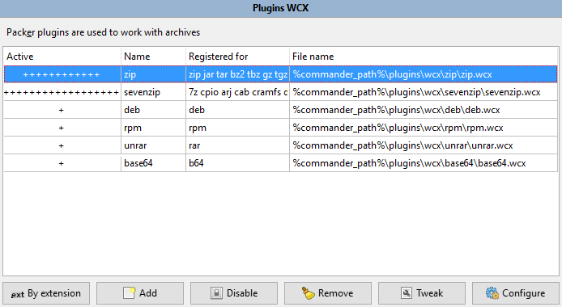
Please note that some formats are read-only, meaning only content viewing, unpacking, and testing are available.
Sometimes the plugin for the type of file archive we want to use does not exist.
Or for whatever raison, sometimes it might happen we would want explicitly use an external packer to use the benefit of a feature or something not present in the pseudo equivalent plugin.
Double Commander uses principle of the work with external archivers similar to plugin MultiArc for Total Commander.
Just to make things clear, using an external archiver may be summarized as this: it's a way to launch the archiver we may be familiar with but to have it driven by Double Commander, by providing to the archiver executable the various parameters we would need to make it like integrated into the application.
The remaining of this page will be on this matter: how to configure Double Commander to launch the external archiver to do whatever we need with it.
Let's suppose we want to use "rar.exe" to deal with .rar archive.
As we may guess it, the basic things we'll need to configure are how call the external archiver to be able to...
This will be done by doing Configuration Options Archiver as illustrated below:
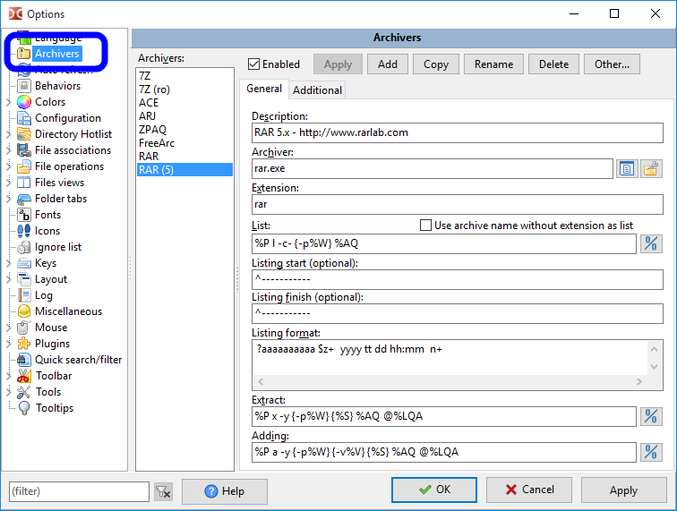
All settings are stored in the multiarc.ini file.
Let's see in the following sections the versatile possibilities Double Commander offers us to properly integrate the usage of an external packer.
We won't describe here each and every fields since once we've started it will be pretty straight forward, but we'll spend time to properly described an example of integration.
We'll describe the integration of the "rar.exe" external archiver. There is nothing better than a complete step by step example.
We click the "Add" button at the bottom, we give a significant name to appear in the list of archiver and then we'll be ready to configure it.
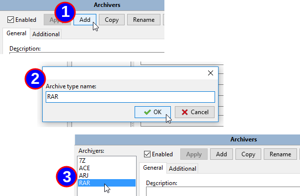
We then need to indicate us a significant description for the archiver, the exact location where is the executable of the archiver and then associated file extension, without the period, to that archiver.
If we have more than one possible, just add them with a single comma between each one, no space.
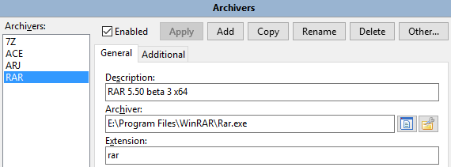
Note: Double Commander supports double extensions (for example, "tar.gz", "tar.xz" and so on), they must be placed in the beginning of the list of extensions (i.e. "tar.gz" before "gz").
As mentioned earlier, we'll need to configure how to invoke our external archiver executable to do what we want.
To help us to do so, Double Commander offer us numerous dedicated variable to fill the configuration string for the various action we may configure.
Here follows a table showing the variable that can be used and what will be substituted for it:
| Command definition | |
|---|---|
| Variable expression | What it stands for |
%P | Long name of archiving utility (as it is in "Archiver" key) |
%p | Short name of archiving utility (as it is in "Archiver" key) |
%A | Long name of archive file |
%a | Short name of archive file |
%L | Filelist name. Filelist is the file containing names of files to be processed by the external archiver. File names is long. |
%l | Filelist with short file names |
%F | The name of a single file to process. The archiver will be executed several times until all file names are exhausted. This variable should be used only if the destination archiver does not support filelists on the command line. |
%V | The volume size (for multivolume archive) |
%W | The password |
%E<errorlevel> | Maximum acceptable command errorlevel. For example, %E2 indicates that errorlevels 0, 1 and 2 are acceptable. This variable may be specified in any place of command. If it is absent, only errorlevel 0 is considered as successful. |
%O<modifier> | By default, multiarc convert archiver output from OEM encoding to UTF-8. Use this to override encoding. See below the possible encoding modifiers. Can be used with "List" action only. |
%R | Target subdirectory IN archive |
{} | If some variable is enclosed in braces - it'll be added only if this variable will contain something non-empty |
%S | Depends on modes, set in configuration dialog, MultiArc will ask user about additional command-line parameters should be passed in-place of %S |
Don't worry, we'll give example later to better understand.
These modifiers may be specified immediately after variables without spaces.
| Variable modifiers | |
|---|---|
| Modifier letter | What it stands for |
F | include in FileList only files (can be used with %L and %l variables) |
Q | quote names with spaces |
q | quote all names |
W | use name only, without path |
P | use path only, without name |
A | use the ANSI system encoding in Windows or the default system encoding in Unix-like systems (in GNU/Linux distributions it is usually UTF-8); can be used with %L and %O variables |
U | use UTF-8 encoding; can be used with %L and %O variables |
Again don't worry, we'll have example later on.
If we want Double Commander to work with the compressed archive file like it would be a directory containing files, we need to be able to get the list of file that the archive has.
At this point, we don't need to uncompress! No, it's just a matter of doing the list of what it contains so Double Commander will show the content to us.
In our example with "rar.exe", it we look at the documentation of it, thre is the "v" command that allow us to get the console application "rar.exe" to give out the list of files inside the archive:
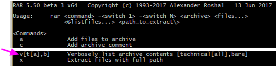
So following the usage of the application, to get the list of what's inside the RAR archive, we need to call the "rar.exe" with parameters with the "v" command and then the archive name.
Let's test this manually first by attempting to show the content of a file like "E:\Temp\just.rar"

So what we need now to do is to configure the "list" to tell to Double Commander how to invoke "rar.exe" to get the content of the compressed archive.
To do that, we'll rewrite the same thing as what we've just did but by using the variable and variable modifier mentioned earlier.
Here is what's it looks like:

We wrote %P v %AQ using the variable mentioned earlier with the Variable and Variable Modifier.
%P will be substituted by our executable written earlier, so "E:\Program Files\WinRAR\Rar.exe".v will remain as is and is the "v" command or the "rar.exe" external archiver to view list of files.%A is the name of the archive, we add to it the Q to indicate we want Double Commander to quote the name if there is space in it.So all this is to invoke the external archiver with proper parameters.
This will be use when we use the internal command cm_OpenArchive.
A few words about the "Use archive name without extension as list" option: This option is intended for archives that can contain only one file and the filename is equal to the archive name without extension (Bzip2, XZ and others). Such compressed files usually do not contain the name of the original file.
So far what we've done will have the archiver to output the list of the files inside the archive files.
But now that's not all! We need to recuperate this outputted data and display it in our panel.
So we need Double Commander to interpret that output table we've that the command of the archiver will output.
As we see in previous capture, the output of the "rar.exe" regarding the content is not just bare data.
There are some annoying information around we need to eliminate to keep only the actual file list.
Luckily, we may configure a magic string so Double Commander will wait to see that string prior to begin to parse the next following lines.
Also, we may configure the magic string to stop parsing as well.
Because we have dashed line before and after, it's pretty easy to set these two parameters with the dashed lines:

In the eventuality that an external archive would immediately output bar data with no extra lines, simply let the two fields empty.
The caret ("^") is a there to indicate that the magic string needs absolutely to start the line, with nothing else.
If it would not be possible to be sure it starts the line, like for example if the external archiver would start the line with the date and time, and then a constant string, we would set the magic string to be the constant string but we would not add the caret which instruct to Double Commander that the string to search might be anywhere.
If the "Listing finish" string might be confused with a filename, it could stop processing the content of the archive too early.
That's why, when possible, it's good to specify that the string must start the line.
Also, if there is a way to set the "Listing finish" string as long as possible, still being constant, it's even better and safe to make sure no confusion will happen in the future.
Now Double Commander knows exactly which data to parse to get the file list of the archive file.
It would have been easy to hard coded in the application a routine to parse that "RAR" output to get the file list.
But Double Commander does not do that.
Instead, it is extremely versatile by giving us the opportunity to configure ourself the way the table will be parsed!
It might be a little bit more complex than having nothing to do, but on the other hand, it gives us maximum of flexibility by being able to use external archival Double Commander developers were not even aware of!
To help us to parse that output table the archiver is giving us, we will have various expression representing by letters.
The following table gives us the "Standard syntax" for parsing the list of content the external archive generated us.
As we will see with the next example, the "standard syntax" is based basically on more direct substitution than the "advanced syntax".
When possible, we will try to use that syntax since it's parsing results faster than the "advanced syntax" which follows.
| Standard syntax parsing | |
|---|---|
| Expression | What it stands for |
n | filename |
z | unpacked size |
c | file description |
p | packed size |
d | day |
t | month |
TTT | three letters month name (Jan, Feb, Mar, ...) |
y | year |
h | hours |
H | hours modifier letter (a – a.m. time, p – p.m. time) |
m | minutes |
s | seconds |
a | attributes |
e | file extension |
? | skip one symbol |
* | skip until first space or end of line |
+ | for name field at line end: use all chars until the end of the line |
So the beauty of the thing here is to use the available expressions from the previous table to write the "Listing format" string that will configure Double Commander for that external archiver so it will be able to get the content of the archive concerning directory and filenames, filesize, attributes, file dates, etc.
First guess for us to help to generate that line would be to write in Notepad for example a line of text for one file we've done manually previously and write below that expression from the previous table that would fit.
Here is an example of that:
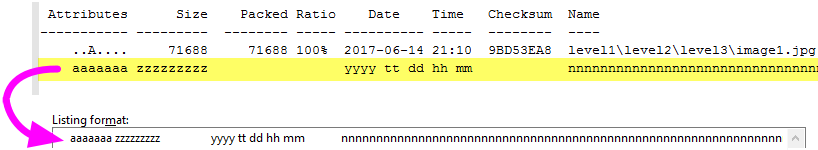
So as we can see, we wrote the parsing expression letter matching to each field at the same exact position where it is located into the output of the archive content that our external archiver outputed us:
So configured that way, if we select our previous "just.rar" archive into a panel, we press Enter to get into it like it would be a directory, we see the file content showing us what we did "basically" worked (if we ignore the last file...):

The following table gives us the "Advanced syntax" for parsing the list of content the external archive generated us.
The element of this syntax will take a little more time to process than the one from the previous table.
So use them only when it's impossible to solve a problematic situation with the previous one.
Example of usage of it will be in the next section.
| Advance syntax parsing | |
|---|---|
| Expression | What it stands for |
+ | for name field not at line end: use all chars up to next space |
+ | after any numeric field: use all digits up to first non-digit character |
n+ | use all chars until the end of the line for filename |
z+ | use all digits up to first non-digit character for the unpacked size |
p+ | use all digits up to first non-digit character for the packed size |
$ | skip all spaces/tabstops until next character or end of line |
\ | data continues on next line (maximum 2 lines supported) |
x | exactly 1 space, if there is a different character at this position, ignore the whole line |
z=1024 | unpacked size multiplied with given value (here: 1024) |
p=1024 | packed size multiplied with given value (here: 1024) |
The example with the "standard syntax" was a good guess, but it is perfect.
There are some cases where it won't work correctly.
With huge files, the filesize is wider than expected so our first attempt of listing will fail.
See our file 007 Skyfall.TS.
We can see it is not displayed with the appropriate information. Let's compare:

So we see it's incorrect regarding the filename, file size, the date, etc.
Let's use elements from the "advanced syntax" to solve this problematic situation.
Here is what could be use to make it work even if outputed field are not *exactly* always on the same width:
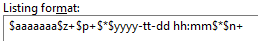
It's a little more complex, but is very easy to described and at the end we'll see it's not so complicated to generate.
Here's a colored description that will help us to visualize the parsing of each little block:
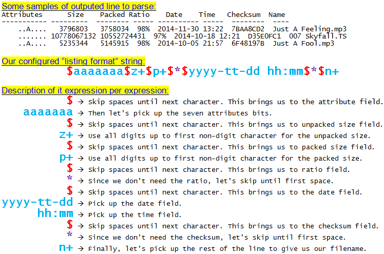
So using that "listing format" string, we may now do again our test and we have the correct result, even for the huge file:

Using the same variables and variable modifiers mentioned earlier, this is the line to configure how to call the external archiver to "extract" a file or all files from the selected archive.
Still continuing our example with "rar.exe", we know from its documentation that we use the command "x" to indicate we want to extract a file or a group of files.
With "rar.exe", we may also provide in parameter a list of file to extract.
So we will take advantage of the variable %L that Double Commander offers us which will create a text file with inside each and every file selected requested from the active to be extracted and that's this single list file that we will pass in parameter.
Here is the line we'll configure in this example with "rar.exe" for the extraction:
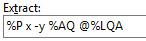
The description of this example is:
So this command will be invoke when we'll select an archive to extract the whole content, just one file, etc.
We may not realize at first but when we'll "enter in" the archive like it would be a directory and we would press F3 to view the content of a file inside the archive, this "Extract" action will took place in background. The selected file will be extracted using that pattern into the system directory for the temporary files and then that's this temporary file that we will look at with the F3 invoken viewer.
This will be use when we use the internal command cm_ExtractFiles.
Using the same variables and variable modifiers mentioned earlier, this is the line to configure how to call the external archiver to "pack" a file or all files to the selected archive.
Still continuing our example with "rar.exe", we know from its documentation that we use the command "a" to indicate we want to create an archive or to add to an existing archive a file or a group of files.
With "rar.exe", we may also provide in parameter a list of file to add.
So we will take advantage of the variable %L that Double Commander offers us which will create a text file with inside each and every file selected requested from the active panel to be added to the archive and that's this single list file that we will be passed in parameter.
Here is the line we'll configure in this example with "rar.exe" for the archive creation or addition:
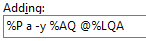
The description of this example is:
So this command will be invoken when we'll select a file or a group of files and request to pack them using the "RAR" external archiver.
This will be use when we use the internal command cm_PackFiles.
Some types of compressed file formats support the possibility to delete a file inside the actual compressed file directly.
If this feature is supported, we may configure Double Commander to indicate how to invoke the external archiver to do so.
Typical situation where this command will be used is when we've entered into a archive, we've selected a file inside it and we click to delete it.
If this "Delete Action" is configured, then it will be used for the action.
Please note that this action is on the second tab of the external archive configuration.
Still continuing our example with "rar.exe", here is how we may configure this action:

The description of this example is:
Some archivers allow to validate the integrity of an archived file to make sure there is no error in them, making sure nothing is corrupted.
If this feature is supported, we may configure Double Commander to indicate how to invoke the external archiver to do so.
Still continuing our example with "rar.exe", here is how we may configure this action:

The description of this example is:
This will be use when we use the internal command cm_TestArchive.
If there is no error, testing window will be closed. If there is an error, a message like the following will appear:

By default when invoking the internal command cm_ExtractFiles to unpack an archive, if the files inside it are arranged with a certain directory structure, then archiver will recreate the same structure while extracting the files.
But, when supported by the archiver, it's sometimes pertinent to extract all the files in the same location without re-creating the directory structure.
So this is where the action "Extract without path" is used when configured.
For example with "rar.exe", the command like to do that will be written this way:

The description of this example is:
The effect of this will be visible in the requester when we request to unpack an archive:

Some archiver can create a "self-extractable" compressed file.
This means that at the end of the process, what we will get is an executable that when it is executed, it will extract the content of what was packed.
This is useful when we want to be sure the persons who will need the content of the compressed file won't have problem to uncompress it: nothing needs to be installed, just execute the file and we'll get the uncompressed ones!
Typically, this action will often be configured similarly as the "Adding action" and we just add a parameter indicating we want a self-extractable result.
That's the case for example with our example with "rar.exe". Here is how we may configure this action:
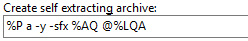
The description of this example is:
To create a self-extracted, please note that the procedure is the same as usual as when creating the compressed file, like using internal command cm_PackFiles, but in the requester that appear, we'll check the option "Create self extracting archive".

We may configure Double Commander in such way that it will ignore file extension of a file and attempt to detect a compressed file archive by it's internal content and then invoke the appropriate list and unpack commands described above.
This is where we will use the internal command cm_OpenArchive.
Example of the usage of this is when we want to see the actual content of a self-extracted .exe file without having to launch it.
Another example would be to see the content of archive that is saved with a different file extension than the regular archive like the .docx file of Microsoft Word which in fact actually a compressed ZIP file.
Basically we may configure Double Commander to detect the presence of strategic pattern of data at specific location into selected file so it will recognize the configured archived.
We will call "ID's" these patterns and this section is about configuration of them.
We have three settings for that: ID, ID Position and ID Seek Range.
We will instruct Double Commander where to search for specific ID's pattern to recognize an a type of archive and then use the configured commands specific to the recognized type of archive.
Let's begin by a simple example. Here follows a snapshot of the beginning of a 7-Zip archive:

By looking at other 7-Zip files, we see that the first six bytes are always the sequence 0x37 0x7A 0xBC 0xAF 0x27 0x1C.
So we will take profit of that by configuring Double Commander that when it sees a file starting with that sequence to assume that the file is an 7-Zip archive.
That's what we do with the following configuration:

We must write ID as a 2-digit hex numbers delimited with spaces.
ID Position (optional) is a position of ID in archive. If not present, ID will be searched in the beginning of archive. We can define the positions with "-" sign: in this case the positions will be calculated from the end of file. Special value <SeekID> determinated search ID if not found by numeric values of ID Position. Seek in range "0 .. size of file" or "0 .. ID Seek Range". Values can be writed as decimal (12345) or hexadecimal (0x3039). For negative values use notation 0xFFFFFFFF (-1).
ID Seek Range (optional) is a count of bytes where ID seek if defined <SeekID>. By default it's 1 MB.
Note: All above parameters can be defined with multiple values. We can use comma to separate those multiple values.
In our example with 7-Zip archive, ID and ID Position (0, because in the beginning of file) will be enough.
So when we invoke internal command cm_OpenArchive, Double Commander will scan content of the file and it recognize the "0x37 0x7A 0xBC 0xAF 0x27 0x1C" pattern at offset 0 in the file, it will process it as it is our configured 7Z type of file and then use the associated configured commands and parameters for listing, extract, etc.
In most cases, there is no need to examine files in hexadecimal representation: the file signature can be found in the format specification or use existing lists, databases or utilities (for example, this Wikipedia page or FreeDesktop.org MIME database).
The steps described above are usually sufficient to use an external archiver, but just in case we have a couple more options:
Show console output – If enabled, Double Commander will write (line by line) the result of the work of the external archiver and parser to the log window.
Debug mode – Similar to the previous option, but the result of the work will also be output to the Double Commander's debugging messages (see the description of --debug-log). In this case, the temporary file with the list of files (%L in our example) will not be automatically deleted after the operation is completed.
If the display of the log window is disabled in the settings, it will be shown forcibly and hidden when Double Commander is closed. Messages will not be saved to the log file.
This menu contains several additional functions:
Auto Configure – Double Commander will check all executable files of archivers: if a file is found, the program will automatically add its full path and enable the archiver, otherwise the archiver will be disabled.
Discard modifications – resets all unsaved settings changes.
Sort archivers – sorts the list of archivers alphabetically.
Disable all and Enable all – enable or disable all archivers.
Export... and Import... – allow us to export and import archiver settings (all archivers or part of them).
By default, files whose extensions are specified in the settings of WCX plugins and external archivers are opened as folders. To open them in an associated application, we can use the "Open" item in the context menu of the file (but in this case only system file associations will be used) or we can add the desired action to the "Actions" menu.
To use the Enter key or double-click, we have to change the settings.
We can just remove the extension from the settings, but in this case the commands cm_OpenArchive and cm_ExtractFiles will become unavailable. Another way:
If a WCX plugin is used, then we can open the plugin settings, select the extension and enable the "Show as normal files (hide packer icon)" flag.
If an external archiver is used to unpack files, then we can fill in the fields for using ID and not specify the file extension.
For such files, Double Commander will use the associated icon instead of the generic archive icon.